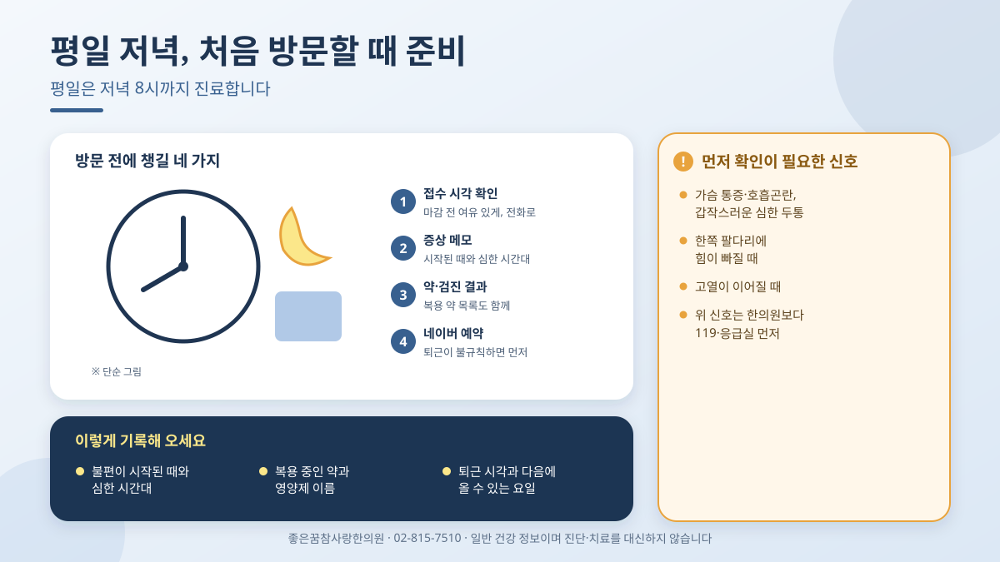

이종호 한의사 감수좋은꿈참사랑한의원 대표원장 (한의사 면허번호 19769)발행 2026-11-22 · 수정 2026-11-26
이 글의 차례
오후 다섯 시, 모니터 구석의 시계를 봅니다. 오늘은 꼭 한의원에 들러 보겠다고 아침부터 마음먹었습니다. 그런데 시간이 다가올수록 걸리는 게 많아집니다. 퇴근하고 출발하면 몇 시에 도착할지, 그 시각에 가도 진료를 받을 수 있을지, 가서 무슨 말부터 해야 할지.
먹고 있는 약 이름은 정확히 모르겠고, 지난번 건강검진 결과지는 메일함 어딘가에 있을 겁니다. 어깨가 아프기 시작한 게 언제였는지도 가물가물합니다. 이것저것 따지다 보면 결국 '다음 주에 가자' 하고 노트북을 덮게 되지요.
진료실에서 이런 말씀을 자주 듣습니다. "진작 오려고 했는데, 뭘 챙겨야 할지 몰라서 자꾸 미뤘어요." 처음 가는 곳은 누구에게나 낯섭니다. 하루 일을 마친 저녁이라면 준비까지 신경 쓸 기운이 남아 있지 않은 것도 당연합니다.
먼저 답부터 드리겠습니다. 평일 진료는 저녁 8시까지입니다. 다만 그날 몇 시까지 접수하면 되는지는 예약 상황에 따라 달라질 수 있어, 방문 전 전화(02-815-7510)로 확인하시고 네이버 예약으로 시간을 잡아 두시길 권합니다.
챙길 것은 세 가지면 충분합니다. 복용 중인 약 목록, 가지고 계신 검사 결과, 그리고 서너 줄짜리 증상 메모입니다. 여기에 하나를 보태자면, 예약 시각보다 조금 일찍 도착해 잠시 숨을 고르시는 것입니다.
왜 저녁 첫 방문은 준비가 조금 더 필요할까요
처음 오시는 날은 다시 오시는 날보다 시간이 더 걸릴 수 있습니다. 불편한 곳과 경위를 여쭙고, 진맥과 진찰을 하고, 오늘 받을 치료와 그 이유를 먼저 설명드려야 하기 때문입니다. 마감 가까이 도착하시면 그 시간이 빠듯해집니다.
저녁에는 기억도 흐려집니다. 하루 종일 일하고 나면 언제부터, 어떨 때 아픈지를 떠올리는 것 자체가 일이 됩니다. 진료실 의자에 앉으면 생각해 둔 말의 절반도 못 하고 일어서는 분이 많습니다.
몸도 아침과 다릅니다. 아침에 뻣뻣하다가 낮에 풀리는 불편이 있고, 하루 동안 쌓여 저녁에 무거워지는 불편이 있습니다. 저녁에만 뵈면 아침의 모습을 놓치기 쉬워서, 아침 상태를 따로 적어 오시면 큰 도움이 됩니다.
- 첫 진료는 다시 오실 때보다 시간이 더 걸릴 수 있습니다
- 퇴근 뒤에는 증상을 떠올려 말하기가 생각보다 어렵습니다
- 저녁의 몸은 아침과 달라, 아침 상태를 따로 알아야 합니다
진료시간과 예약, 출발 전에 이것만 확인하세요
진료시간은 평일 09:30~20:00(점심 13:00~14:00), 토·일·공휴일 09:30~15:00(점심시간 없음)입니다. 퇴근이 늘 늦다면 처음 오시는 날만큼은 시간 여유가 있는 주말 오전으로 잡는 방법도 있습니다.
그날 마지막 접수 시각, 진료하는 원장, 임시 휴진 여부는 방문 전 전화로 확인해 주세요. 진료는 이종호 대표원장과 조영기 원장, 정원영 원장이 봅니다. 담당 원장이 다른 날에도 이전 기록을 보고 이어서 진료하고, 대표원장이 일정 기간마다 다시 맥을 확인합니다.
주소는 서울 동작구 만양로2길 2 신성빌딩 3층·5층입니다. 상도역 3번 출구로 나와 약 200m 직진한 뒤, 오거리에서 오른쪽으로 약 200m 오시면 됩니다.
노량진역(1·9호선)에서는 3번 출구에서 마을버스 동작01을 타고 신동아리버파크에서 내리시면 됩니다. 주차는 방문 전 전화(02-815-7510)로 확인해 주세요.
전날 밤 10분, 증상 메모 만들기
메모는 길 필요가 없습니다. 네 가지에 한 줄씩만 답해 보세요. 언제 불편이 시작되는지, 얼마나 자주 오는지, 한 번 오면 얼마나 가는지, 무엇을 하면 덜해지는지입니다.
예를 들어 '두 달 전부터 오후 네 시쯤 오른쪽 목과 어깨가 무겁다. 일주일에 서너 번, 퇴근할 때까지 간다. 뜨거운 샤워를 하면 덜하다' 정도로 적으시면 됩니다. 여기에 아침에는 어떤지 한 줄을 보태 주세요.
그리고 잠, 소화, 대소변, 몸이 찬지 더운지를 한 단어씩 적어 보세요. 어깨가 아파서 왔는데 왜 잠을 묻느냐고 하시는 분이 많습니다. 몸은 따로따로 움직이지 않아서, 잠을 못 잔 날은 같은 통증도 더 크게 느끼기 쉽기 때문입니다.
마지막으로 '이번에 가장 먼저 편해지고 싶은 것' 하나를 적어 오세요. 계단 내려가기든, 아침에 일어나기든, 밤에 깨지 않고 자기든 좋습니다. 그 한 줄이 첫날 무엇부터 볼지를 정해 줍니다. 메모는 휴대폰 메모장이면 충분하고, 진료실에서 화면을 그대로 보여 주셔도 됩니다.
약 목록과 검사 결과는 사진으로도 됩니다
약은 봉투째 가져오시거나 약 봉투와 처방전을 휴대폰으로 찍어 오셔도 됩니다. 영양제와 건강기능식품도 함께 알려 주세요. 혈액을 묽게 하는 약은 침을 맞을 때 멍이 들기 쉬워 특히 미리 알아야 합니다.
검사 결과는 건강검진 결과지나 다른 병원에서 받은 혈액검사, MRI 판독지처럼 가지고 계신 것이면 됩니다. 종이가 없으면 화면을 찍어 오셔도 괜찮습니다.
약이 여러 가지라 하나하나 적기 어렵다면 모두 가져와 주세요. 줄여도 되는 약이 있는지는 혼자 정하지 마시고, 처방한 의사나 약사에게 약을 모두 보여 드리고 상의하세요.
진료 당일 낮에는 이렇게 지내 보세요
점심은 거르지 말고 가볍게 드세요. 침이나 추나를 받을 때 공복이면 어지러울 수 있습니다. 반대로 오기 직전에 배부르게 먹으면 배를 살피기 어렵고 맥도 달라질 수 있어, 퇴근 무렵에 간단히 요기만 하고 오시는 정도가 알맞습니다.
오후에 물을 한두 잔 챙겨 드세요. 물을 거의 안 드신 날은 근력을 확인할 때 힘이 평소와 다르게 나올 수 있습니다. 커피를 드셨다면 물도 한 잔 더 드시면 됩니다.
진료 한 시간 전부터는 커피와 사탕, 색이 진한 음료를 피해 주세요. 혀를 볼 때 색이 달라 보일 수 있습니다. 옷은 어깨나 허리를 걷기 쉬운 편한 차림이면 좋고, 정장이라면 갈아입을 옷을 하나 챙겨 오셔도 됩니다.
회식이나 술 약속이 있는 날은 피해서 예약하세요. 침을 맞은 날은 과음과 무리한 운동을 삼가시는 편이 좋아, 저녁 운동을 하신다면 그날만큼은 쉬어 가세요.
도착해서 진료를 마칠 때까지
데스크에서 기본 정보를 적고, 챙겨 오신 약 목록과 검사 결과를 보여 주세요. 진료실에 들어오시면 먼저 이야기를 듣습니다. 메모를 보며 말씀하셔도 되고, 메모를 그대로 건네주셔도 됩니다.
그다음 양손을 내어 달라고 말씀드립니다. 손목 안쪽 세 자리를 양쪽 모두 짚으며, 맥을 보는 동안에도 잠과 소화를 이어서 여쭙습니다. 필요하다고 판단되면 혀와 배를 보고, 아픈 부위를 직접 움직여 보거나 초음파로 근육과 힘줄을 확인하기도 합니다.
맥을 두고 제가 자주 드리는 비유가 있습니다. 맥은 실체가 아니라 지금 몸이 어떻게 버티고 있는지 비춰 주는 그림자라는 것입니다. 그래서 맥 하나로 결론을 내리지 않고, 메모에 적어 오신 이야기와 함께 맞춰 봅니다. 진료실에서는 환자분과 환자분의 맥, 그리고 저, 이렇게 셋이 이야기하는 셈입니다.
살펴본 뒤에는 오늘 받을 치료와 그 이유를 먼저 설명드립니다. 침, 약침, 추나, 체외충격파, 물리치료 가운데 지금 상태에 맞는 것을 고르고, 필요하면 한약 상담도 드립니다. 상담만 먼저 받고 치료는 다음에 정하셔도 됩니다.
치료 중에는 뻐근한지, 찌릿한지, 시원한지 느낌만 말씀해 주세요. 그 말씀에 맞춰 깊이와 세기를 조절합니다. 마지막으로 집에서 지켜볼 점을 알려 드립니다. 다음 진료가 필요하면 평일 저녁이 편한지 주말이 나은지 여쭈어 무리 없는 요일로 함께 정하니, 오실 수 있는 요일을 미리 생각해 두시면 이야기가 짧아집니다.
갑자기 삐끗했거나 다친 지 얼마 안 되었다면, 정형외과든 한의원이든 초반에 의사에게 직접 보여 주고 궁금한 것을 마음껏 물어보시는 편이 좋습니다. 다친 뒤 하루하루 달라진 점을 한 줄씩 적어 오시면 제가 놓치는 것도 줄어듭니다.
먼저 이렇게 여쭙니다
- 가장 불편한 곳은 어디이고, 언제부터 그러셨나요?
- 하루 중 언제 심한가요? 아침과 저녁 가운데 어느 쪽이 더 힘드신가요?
- 드시는 약과 영양제, 다른 병원에서 받고 있는 치료가 있나요?
- 약물·음식 알레르기, 당뇨나 간·신장 질환, 임신 가능성이 있나요?
- 침을 맞다 어지러웠던 적이 있거나, 바늘을 보면 힘든 편인가요?
뒤의 두 가지는 치료를 정하기 전에 꼭 알아야 하는 것들입니다. 기억나지 않는 것은 비워 두셔도 괜찮습니다. 맥을 짚으며 하나씩 다시 여쭙겠습니다.
진료 뒤 저녁 시간은 이렇게 보내세요
저녁 진료를 받으면 치료를 마치고 바로 집에 가서 쉴 수 있습니다. 다만 몇 가지만 지켜 주세요.
진료 때 파스를 붙여 드렸다면 대개 세 시간쯤 지나 떼시면 되고, 그날 상태에 따라 귀가 전에 다시 말씀드립니다. 저녁에 붙였다면 잠들기 전에 떼고 피부를 쉬게 하는 편이 좋습니다. 찜질기를 켠 채 잠드는 것도 피하세요.
침을 맞은 날은 뜨거운 탕과 사우나, 과음을 피하시고 가벼운 샤워 정도만 하세요. 침 맞은 자리는 세게 문지르지 마시고, 추나를 받았다면 그날은 무거운 물건을 들지 않는 편이 좋습니다.
진료를 마치고 늦은 저녁을 드시게 된다면 가볍게 드세요. 배부르게 먹고 바로 누우면 속이 더부룩해 잠이 얕아지기 쉽습니다.
잠들기 전에는 진료 뒤 달라진 느낌을 한 줄 적어 두세요. 그 한 줄이 다음 진료를 이어 가는 실마리가 됩니다.
하루 이틀 뻐근할 수 있지만, 침 자리가 붓고 열이 나거나 어지럽고 식은땀이 나면 다음 예약을 기다리지 말고 연락해 주세요. 숨쉬기가 불편하거나 온몸에 두드러기가 돋으면 바로 가까운 응급실로 가세요.
이런 경우라면 이렇게 준비해 보세요
예를 들어 학원 수업을 마치고 저녁에 오는 수험생이라면, 공부하는 책상과 의자 사진, 하루 앉아 있는 시간을 메모해 오시면 좋습니다. 목이나 허리가 몇 시쯤부터 뻐근해지는지 적어 오면 쉬는 시간을 어디에 넣을지도 함께 보입니다.
퇴근길에 부모님을 모시고 함께 오신다면, 부모님이 드시는 약을 모두 챙기고 대신 설명할 내용을 미리 적어 오세요. 거동이 불편하시면 이동 방법을 방문 전 전화로 여쭤 보셔도 됩니다.
교통사고 뒤 낮에는 시간을 낼 수 없어 저녁에 오신다면, 사고 일시와 부딪힌 방향, 병원 검사 결과, 보험사에서 받은 접수 번호를 챙겨 오세요. 보험 처리와 서류는 보험사 담당자에게, 한의원 접수에 필요한 것은 방문 전 전화로 먼저 확인해 주세요.
일상에서 먼저 해 볼 수 있는 것
오시기 전 며칠 동안 해 두시면 첫 진료가 한결 수월해집니다.
- 아침과 저녁에 불편한 정도를 0부터 10까지 한 줄씩 적어 보기
- 아픈 동작이 있다면 휴대폰 영상으로 짧게 찍어 두기
- 잠든 시각과 일어난 시각, 저녁 먹은 시각을 메모하기
- 하던 운동은 무리하지 않는 정도로 줄여 두기
한의원에서 함께 살필 수 있는 경우
- 낮에는 시간을 낼 수 없어 불편을 몇 주째 미뤄 온 경우
- 목, 허리, 잠, 소화가 함께 흔들려 무엇부터 말해야 할지 모르겠는 경우
- 다른 병원 치료를 받으면서 한의원 진료를 함께 받아 보고 싶은 경우
- 드시는 약이 많아 한약 상담이 걱정되는 경우
여러 불편이 겹쳐 있다면 첫날 모두 다루려 하지 않으셔도 됩니다. 가장 먼저 편해지고 싶은 것 하나부터 정하고, 나머지는 그다음에 차례로 살펴봅니다.
이렇게 기록해 오시면 상담이 쉬워집니다
- 불편이 시작된 때, 하루 중 심한 시각, 아침과 저녁의 차이
- 복용 중인 약과 영양제 이름(사진도 괜찮습니다)
- 건강검진이나 다른 병원 검사 결과
- 퇴근 시각과 진료받기 편한 요일
이런 증상은 먼저 확인이 필요합니다
- 갑자기 가슴이 조이듯 아프거나 숨이 차서 말을 잇기 어려운 경우
- 한쪽 팔다리에 힘이 빠지거나, 말이 어눌해지거나, 얼굴 한쪽이 처지는 경우
이런 신호가 있으면 한의원보다 가까운 병원이나 응급실을 먼저 찾으세요.
마치며
처음 오는 날을 너무 잘 준비하려고 애쓰지 않으셔도 됩니다. 약 사진 한 장, 메모 세 줄이면 충분합니다. 빠뜨린 것은 진료실에서 제가 여쭙겠습니다.
하루 일을 마치고 오시는 길이니, 진료실에서만큼은 편히 앉아 숨을 고르셨으면 합니다. 저는 우리 한의원이 "잘 쉬다가는 곳"이었으면 한다고 말하곤 합니다. 저녁에 오시는 분일수록 그 말을 더 지키고 싶습니다.
다음에 진료실에서 뵈면, 저는 양손을 내어 달라고 말씀드리고 메모의 첫 줄부터 여쭙겠습니다.
함께 읽으면 좋은 글
- 퇴근길에 한의원에 들르려면 평일 저녁 몇 시까지 가면 되나요?
- 침 맞을 때 '느낌만 말씀하세요'라고 하는 이유는 뭔가요?
- 맥진은 어떻게 하고 손목에서 무엇을 살피나요?

여쭙는 것
- 가장 불편한 곳은 어디이고, 언제부터 그러셨나요?
- 하루 중 언제 심한가요? 아침과 저녁 가운데 어느 쪽이 더 힘드신가요?
- 드시는 약과 영양제, 다른 병원에서 받고 있는 치료가 있나요?
생활에서 해 볼 것
- 아침과 저녁에 불편한 정도를 0부터 10까지 한 줄씩 적어 보기
- 아픈 동작이 있다면 휴대폰 영상으로 짧게 찍어 두기
- 잠든 시각과 일어난 시각, 저녁 먹은 시각을 메모하기
한의원에서 함께 살필 것
- 낮에는 시간을 낼 수 없어 불편을 몇 주째 미뤄 온 경우
- 목, 허리, 잠, 소화가 함께 흔들려 무엇부터 말해야 할지 모르겠는 경우
- 다른 병원 치료를 받으면서 한의원 진료를 함께 받아 보고 싶은 경우
먼저 확인이 필요한 신호
- 갑자기 가슴이 조이듯 아프거나 숨이 차서 말을 잇기 어려운 경우
- 한쪽 팔다리에 힘이 빠지거나, 말이 어눌해지거나, 얼굴 한쪽이 처지는 경우
한눈에 보는 표
| 구분 | 핵심 |
|---|---|
| 여쭙는 것 | 가장 불편한 곳은 어디이고, 언제부터 그러셨나요? 하루 중 언제 심한가요? 아침과 저녁 가운데 어느 쪽이 더 힘드신가요? |
| 생활에서 해 볼 것 | 아침과 저녁에 불편한 정도를 0부터 10까지 한 줄씩 적어 보기 아픈 동작이 있다면 휴대폰 영상으로 짧게 찍어 두기 |
| 한의원에서 함께 살필 것 | 낮에는 시간을 낼 수 없어 불편을 몇 주째 미뤄 온 경우 목, 허리, 잠, 소화가 함께 흔들려 무엇부터 말해야 할지 모르겠는 경우 |
| 먼저 확인이 필요한 신호 | 갑자기 가슴이 조이듯 아프거나 숨이 차서 말을 잇기 어려운 경우 한쪽 팔다리에 힘이 빠지거나, 말이 어눌해지거나, 얼굴 한쪽이 처지는 경우 |
자주 묻는 질문
예약을 꼭 해야 하나요?
그날 상황에 따라 기다리는 시간이 달라질 수 있고, 평일 저녁은 퇴근 시간대라 붐빌 수 있습니다. 네이버 예약으로 시간을 잡아 두시거나 방문 전 전화(02-815-7510)로 확인하시길 권합니다.
저녁에는 몇 시까지 진료하나요?
평일은 저녁 8시까지 진료합니다. 그날 마지막 접수 시각은 예약 상황에 따라 달라질 수 있어 방문 전 전화로 확인해 주세요. 토·일·공휴일은 오후 3시까지입니다.
처음 가면 시간이 얼마나 걸리나요?
이야기와 진찰 내용에 따라 다릅니다. 처음에는 진찰이 있어 다시 오실 때보다 오래 걸릴 수 있으니 시간 여유를 두고 오시면 좋습니다.
상담만 먼저 받아도 되나요?
네. 불편한 상황을 듣고 진맥과 진찰을 한 뒤 계획을 설명드리며, 치료를 받을지는 그 뒤에 정하셔도 됩니다.
주차할 곳이 있나요?
주차는 방문 전 전화(02-815-7510)로 확인해 주세요. 상도역 3번 출구에서 걸어서 오실 수도 있습니다.
좋은꿈참사랑한의원은 재진 때 지난번 이야기부터 이어서 여쭙니다. 진료시간과 예약은 오시는 길에서 확인하세요.
어디서 상담받을 수 있나요?
좋은꿈참사랑한의원은 서울 동작구 만양로2길 2 신성빌딩 3층·5층(서울 동작구 상도동, 7호선 상도역 3번 출구 근처)에 있습니다. 한의사 3명(이종호 대표원장, 조영기 수석진료원장, 정원영 진료원장)이 진료합니다. 진료시간은 평일 09:30~20:00(점심 13:00~14:00), 토·일·공휴일 09:30~15:00이며, 방문 전 전화로 확인을 권합니다. 예약은 네이버 예약, 카카오톡 상담, 전화 02-815-7510로 받습니다.
이 글은 일반적인 건강 정보이며 개인의 진단이나 치료를 대신하지 않습니다. 증상이 있거나 복용 중인 약이 있다면 진료를 통해 확인하세요. 치료 효과는 개인마다 다를 수 있습니다.
작성 기준: 일반적으로 알려져 있는 건강 정보를 참고해 정리했습니다(대표원장 감수). 증상 기록은 1~2주 동안 하루 1회, 비슷한 시간에 적어 오시면 지난 상태와 비교하기 쉽습니다.